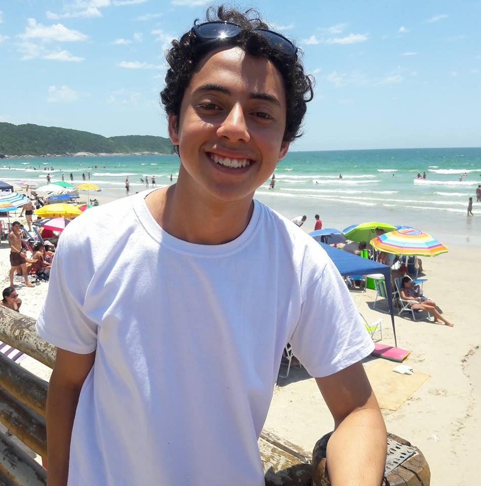

Sou daqueles que acredita que é capaz de tudo,aquele que não desiste,
que se for pra fazer o que gosto,por que não,é claro que vou.
Gosto de computadores desde pequeno,tive o meu primeiro com 10 anos.
Hoje com 18 ,me sinto como uma pessoa que nasceu realmente pra isso
e por isso,entrei no rumo dos seguidores da tecnologia da informação.
Além disso como hobby,gosto de fazer outras coisas também ,como soltar
a voz em casa pra cantar,acompanhado do meu querido violão, ou as vezes
que faço um esforço pra dar uma corridinha pelo parque,afinal,sair da
zona de conforto pode ser uma boa opção para aliviar os nervos.
Após o término do ensino médio (2016),optei por cursar Engenharia de Software.
Cursei por pouco tempo,o ano acabou e infelizmente não pude continuar no segundo
ano por motivos financeiros.Neste período tive contato com diversas áreas como:
Algoritmos junto com lógica de programação,básico sobre a arquitetura dos
computadores e muita programação envolvendo a linguagem C.Uma das melhores
matérias sem dúvida foi ela própia,ENGENHARIA DE SOFTWARE.É nela que aprendemos
como fazer uma análise de requisitos completa,aprendemos quais diagramas devem
ser usados,aprendemos metodologias de desenvolvimento ágeis e tudo isso
nos dá uma boa base para saber o que realmente estamos fazendo.
Como não podia estudar em uma faculdade por enquanto,resolvi aprender
tudo em casa mesmo e foi aí que conheci a fundo a programação web.
Agora estou aqui ,tenho pouca experiência no assunto,porém já possuo
uma base para poder criar meu projetos da minha maneira.
